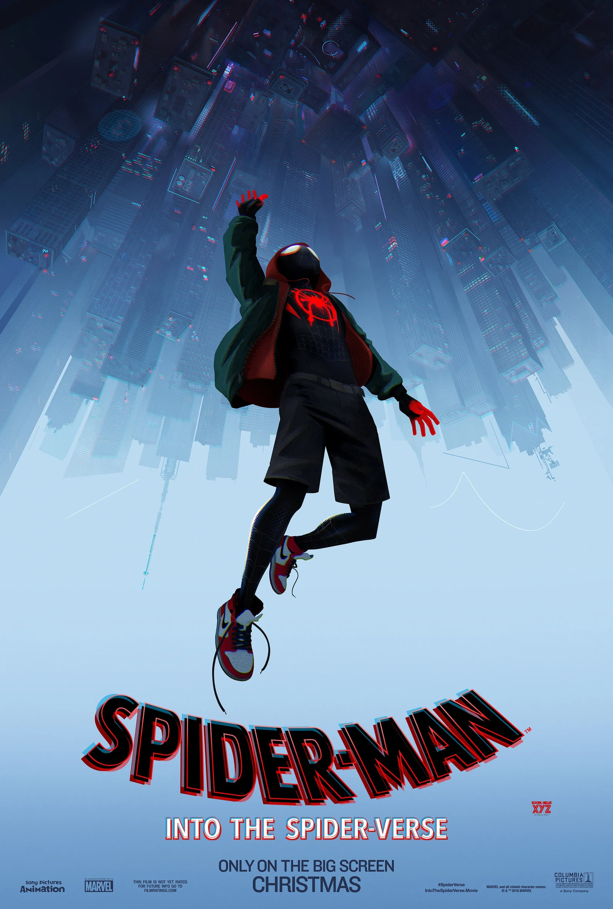

<!DOCTYPE html>
<html lang="en">
  <head>
    <meta charset="UTF-8" />
    <meta name="viewport" content="width=device-width, initial-scale=1.0" />
    <link rel="stylesheet" href="Style.css" />
    <link rel="icon" href="Images/Grey-Logo.png" />
    <title>CineSeek</title>
  </head>

  <body>
    <div class="search-container">
      <div class="search-element">
        <input
          type="text"
          class="form-control"
          placeholder="Search Movie Title ..."
          id="movie-search-box"
          onkeyup="findMovies()"
          onclick="findMovies()"
        />

        <div class="search-list" id="search-list"></div>
      </div>
    </div>

    <div class="container">
      <div class="result-container">
        <div class="result-grid" id="result-grid">
          <!-- movie information here -->
          <!-- <div class="movie-poster">
            
          </div>
          <div class="movie-info">
            <h3 class="movie-title">Into the SpiderVerse</h3>
            <ul class="movie-misc-info">
              <li class="year">Year: 2018</li>
              <li class="rated">Ratings: PG</li>
              <li class="released">Released: 14 Dec 2018</li>
            </ul>
            <ul class="movie-misc-info">
              <p class="genre"><b>Genre:</b> Action, Adventure, SuperHero</p>
              <p class="imbdb-rating">
                <b><i class="fas fa-star"></i></b> 8.4/10
              </p>
            </ul>
            <p class="writer">
              <b>Writer:</b> Peter Ramsey, Bob Persichetti, Rodney Rothman
            </p>
            <p class="actors">
              <b>Actors: </b>Shameik Moore, Jake Johnson, Hailee Steinfield
            </p>
            <p class="plot">
              <b>Plot:</b> Bitten by a radioactive spider in the subway,
              Brooklyn teenager Miles Morales suddenly develops mysterious
              powers that transform him into the one and only Spider-Man. When
              he meets Peter Parker, he soon realizes that there are many others
              who share his special, high-flying talents. Miles must now use his
              newfound skills to battle the evil Kingpin, a hulking madman who
              can open portals to other universes and pull different versions of
              Spider-Man into our world.
            </p>
            <p class="language"><b>Language:</b> English, Spanish</p>
            <p class="awards">
              <b><i class="fas fa-award"></i> Awards:</b> Won 1 Oscar. Another
              80 wins & 56 nominations.
            </p>
          </div>  -->
        </div>
      </div>
    </div>


    <script
      src="https://kit.fontawesome.com/6b0af4bcb3.js"
      crossorigin="anonymous"
    ></script>
    <script src="script.js"></script>
  </body>
</html>
